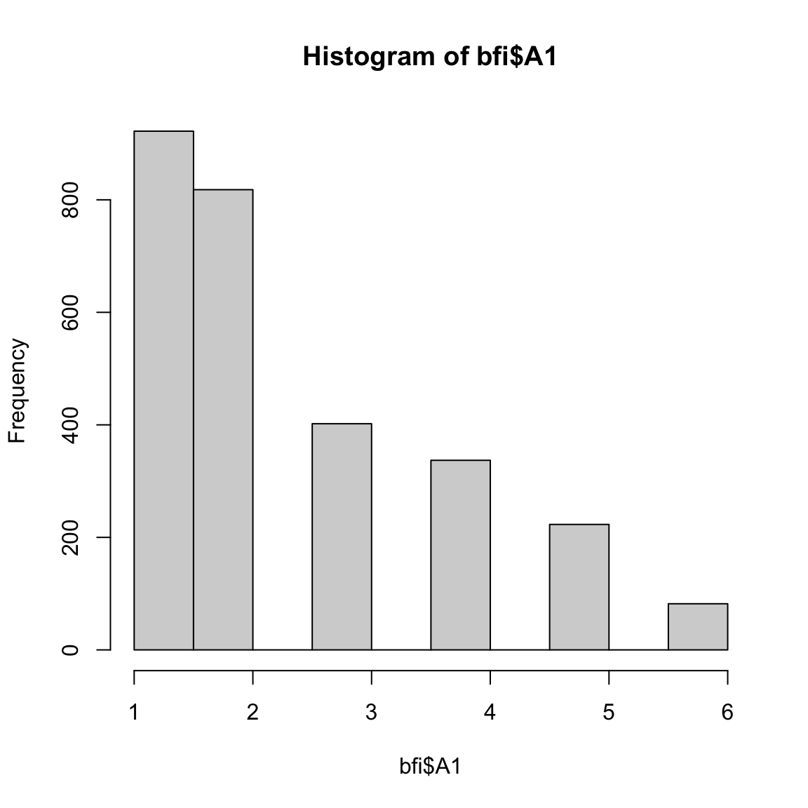
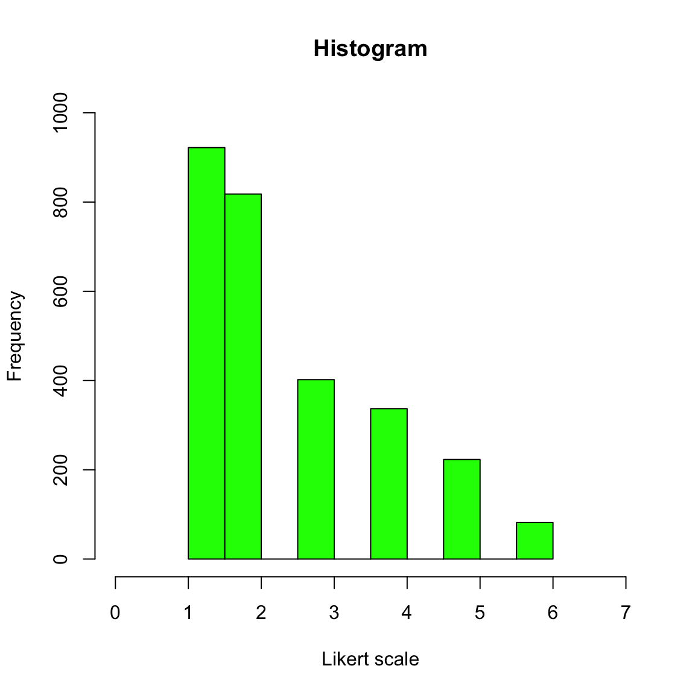

Data Visualisation
Aiden
13 June, 2017
Intro to visualisation
There are tons of different packages that can be used to visualise data. I will be covering a couple of these packages. These should be good enough to get you started on your own. First we will start using the functions that are provided by base R. These plotting functions do not rely on any packages. Sort of like a quick dirty way to see your data. The plotting capabilities are super flexible, but we want to keep it simple and straightforward for our audience to understand. Then we will use the ggplot2 package to help us do more plotting. As usual, there are questions at the end for you to complete. In this case, we will only test you on ggplot2.
Dataset
So let’s use the bfi dataset from the psych package. If you want to see what is in the bfi dataset, all you need to do is to
- Install psych package
install.packages() - Load psych package
require() - load dataset
data() - See what is in the dataset
str()
To make things easy. I will quick a quick brief introduction to the data. For more information please see the documentation ?bfi.
Five Personality Factors
- 28 variables in total
- 25 personality items
- 5 items per factor
- 2800 observations
- Includes gender, edu and age.
Generic Plotting
We can immediately start plotting to get a generate sense of the data we have.
Here are some questions you might want to ask at the beginning.
- How does the distribution of my items look like? (histogram)
- Is there a relationship between openness and extraversion? (scatterplot)
- Are there differences in item scores between gender? (boxplot)
Histogram
To address the first question: How does the distribution of my items look like?
We use the hist function.
You can try changing the variables in the dataset to see how the histogram changes.
hist(bfi$A1)
Here are the few more arguments which you might want to use to beautify the plot before you show someone else.
This is usually good enough to show your colleagues what your data looks like.
r <- hist(bfi$A1,
main= "Histogram", # title
xlab="Likert scale", # x-axis label
ylab="Frequency", # y-axis label
col='green', # colour of bins
ylim=c(0,1000), # y-axis limits
xlim=c(0,7)) # x-axis limits
Scatterplot
To address the second question: Is there a relationship between openness and extraversion??
We will use the plot function.
First, we need to get the average scores of each person per factor.
names(bfi) #names
E <- bfi[,11:15] #Extraversion
O <- bfi[,21:25] #Openness
E_means <- rowMeans(E) # mean score of each person for extraversion
O_means <- rowMeans(O) # mean score of each person for opennessGiven that we have the mean scores of each participant for both factors. We can see if the factors do in fact have a relationship via visualisation.
You can change the arguments in the plot function so that it will display what you want. This is just a simple example.
Here you can see that there is a positive relationship between the scores.
What happens then? You normally test for significant relationship. But this give you quick a good idea of your data.
plot(x = E_means,
y = O_means,
pch= 3, # the design of the points
cex = 0.5, # size of the points
col="dark red") # the colour of the points
abline(lm(E_means~O_means), col="blue") # adds a regression line (y~x), aka the best fit line. The abline draws the best fit line. The best fit line is derived from using the lm(), which is the linear regression function. Using just the lm function will give you the beta estimates and the significance of the relationship between the IVs and DVs. Boxplot
To finally address the third question: Are there differences in item scores between gender?
We will use the boxplot function.
We can see that most people in the sample are scoring at the upper bound of the response scale.
boxplot(A4~gender, # variable ~ group
data=bfi, # dataset
main="BFI Data", # title
xlab="Gender", # x-axis label
ylab="Likert Scale") # y-axis label
What happens if you are interested in differences in scores between gender for a factor instead of an item?
Then you need to first get the average score of each participant for the specific factor.
E <- bfi[,11:15] #Extraversion items
E_means <- rowMeans(E) # mean score of each person for extraversion
bfi$E_Means <- E_means #Put it into a new column in the dataset
boxplot(E_Means ~gender, # variable ~ group
col=(c("gold","darkgreen")), # colour between boxplots
data=bfi, # dataset
main="BFI Data", # title
xlab="Gender", # x-axis label
ylab="Likert Scale", # y-axis label
notch=TRUE) # include notch
One thing to note is: There is ‘strong evidence’ that their medians differ if the two boxes’ notches do not overlap (Chambers et al., 1983, p. 62).
This can be followed up by running t-test.
GGPLOT2
GGPLOT2 is perhaps one of the most widely used visualisation package. There are many resources out there to help you achieve what you need in order to use ggplot2.
If you want Books about ggplot2:
The R Graphics Cookbook by Winston Chang.
ggplot2: Elegant Graphics for Data Analysis by Hadley Wickham describes the theoretical underpinnings of ggplot2 and shows you how all the pieces fit together.
If you want online resources about ggplot2:
Here I will just describe the very basic of ggplot2. It is based on the grammar of graphics. Imagine that you want to form a sentence. You need to first know how you want to express yourself, then you find the words to say it. The words will only make sense if they are constructed correctly. If not, it is just jibberish. Similar to plotting using ggplot2. You need to have some idea of what you are trying to plot, then you add the pieces bit by bit in order to achieve the final look.
First, you need to install and load the package:
#install.packages('ggplot2')
library(ggplot2)The basic generic code of ggplot is like this:
ggplot(dataset,aes(x,y)) + geom_type() + gg.title()
You can see that the aes() is embedded within the ggplot(). Anything that goes into the aes() means that you are trying to use some variable in your dataset and convert it into a graphical form.
You need to:
- Think about what you are trying to plot and how you want it to look.
- Think about the variables that becomes the x and y variables.
- Think about the type of geometric object that exist in ggplot2 and can be used.
- Think about the aesthetics (i.e. title, colour, font size, background etc. )
# read dataset from dropbox
# big 5 scores with some demographics data
big5 <- read.csv('https://www.dropbox.com/s/xhhes7eu8nozvn2/big5.csv?raw=1')Histogram
For example, I would like to see the distribution for the conscientiousness variable.
- I want to plot a histogram
- I only need the conscientiousness variable (con) as the x variable. So con goes inside the
aes() - I can use the
geom_histogram()to map the data values into a histogram
ggplot(big5, aes(x = con)) + # base
geom_histogram(binwidth=0.2, colour="black", fill="white") # geometric object to represent the data
Now, what if I want to add a vertical line that represents the mean score of con?
You simple use the ‘+’ sign and include a new geometric object that will represent the vertical line.
The geom_vline() can be used to represent the vertical line. Since we are manipulating a specific variable in the dataset, we need to put aes() inside the geom_vline().
ggplot(big5, aes(x = con)) +
geom_histogram(binwidth=0.2, colour="black", fill="white") +
geom_vline(aes(xintercept=mean(con, na.rm=T)), colour="red", size=1, linetype="dashed")
Scatterplot
Say your lecturer/line manager asks you to show them the relationship between 2 continuous variables - age and conscientiousness.
How would you plot that relationship using ggplot2?
ggplot(big5, aes(x = age, y = con)) + # x variable is age, y variable is conscientiousness
geom_point() + # object to represent points in the scatter plot
geom_smooth(method="lm") # to draw the best fit line
Now let’s spice it up a little bit.
What if your lecturer/line manager asks you to differentiate the dots between gender? Would that be possible?
Of course! Remember, if you want to manipulate a specific component within the plot, you make changes to that specific part. Since we know that we want to differentiate the data points by gender, we put the aes() inside the geom_point() with aes(color=gender). This means that ggplot2 will look into the dataset, search for the gender column, and differentiate by the numeric values. In this case, male = 0, and female = 1. Of course if you coded gender by another name, say sex, then it will be aes(color=sex)
In this case, you see a third variable NA. This happens because in the dataset there are missing data for the gender column. Hence, to make your graph look neater, you can always first remove all missing data before plotting.
ggplot(big5, aes(x = age, y = con)) + # x variable is age, y variable is conscientiousness
geom_point(aes(color=gender)) + # object to represent points in the scatter plot.
geom_smooth(method="lm") # to draw the best fit line
Aesthetics
So this will cover some of the aesthetics that you can design for your plot.
Naming x and y axis
p <- ggplot(big5, aes(x = age, y= con)) + # x variable is age, y variable is conscientiousness
geom_point(aes(color=gender)) + # object to represent points in the scatter plot.
geom_smooth(method="lm") # to draw the best fit line
p <- p + scale_x_continuous(name="age") #,limits=c(0,7), breaks=0:7
p <- p + scale_y_continuous(name="conscientiousness")
p-1.png)
Theme manipulation
p <- p + ggtitle("Scatterplot")
p <- p + theme (plot.title=element_text(lineheight=.8, face="bold", size=18))
p <- p + theme(axis.title.x = element_text(size=17, face="bold"))
p <- p + theme(axis.title.y = element_text(size=17, face="bold", color="red"))
p-1.png)
Changing the background colour
p <- p + theme(panel.background = element_rect(fill = 'white', colour = 'red'))
p <- p + theme(plot.background = element_rect(fill = 'white', colour = 'red'))
p-1.png)
Questions
Okay. This is the basic principle of ggplot2. If you have gotten this far, then you are good to go for the exercises. These exercises below will be challenging if you are completely new to R but nevertheless, possible.
You will need the help of google for some of the exericses. The idea is to basically recreate the plots you see below. This should take about an hour if you already know R, but perhaps 2 hours if you are new to R.
To ease the workload, I have written the structure of the code for you. In the script, you will see many XXXXs and your job is to remove the XXXXs and fill it in with the correct code in order for the graph to be displayed.
You can get the script here. You can use the dataset here.
Don’t fret. Everyone’s been there.
Exercise 1

Exercise 2

Exercise 3

Exercise 4

Exercise 5

Exercise 6
Exercise 7

Exercise 8

Exercise 9

Exercise 10